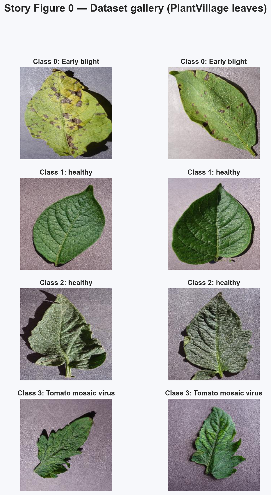
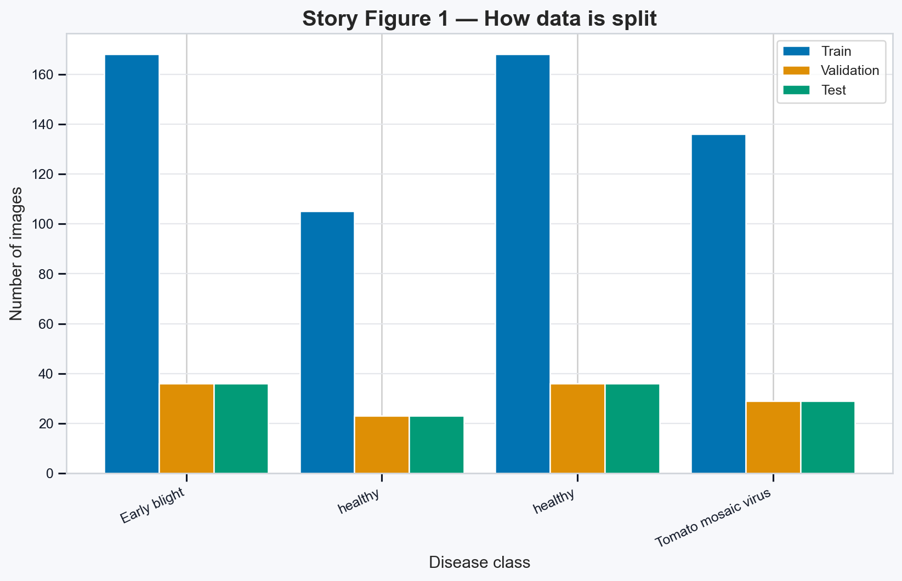
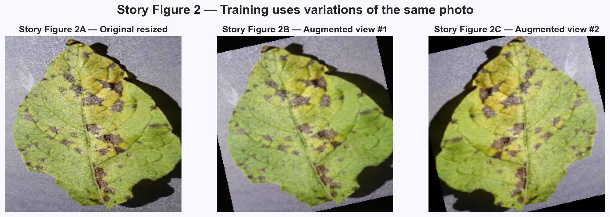
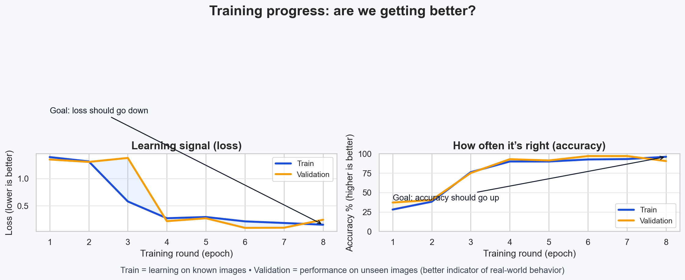
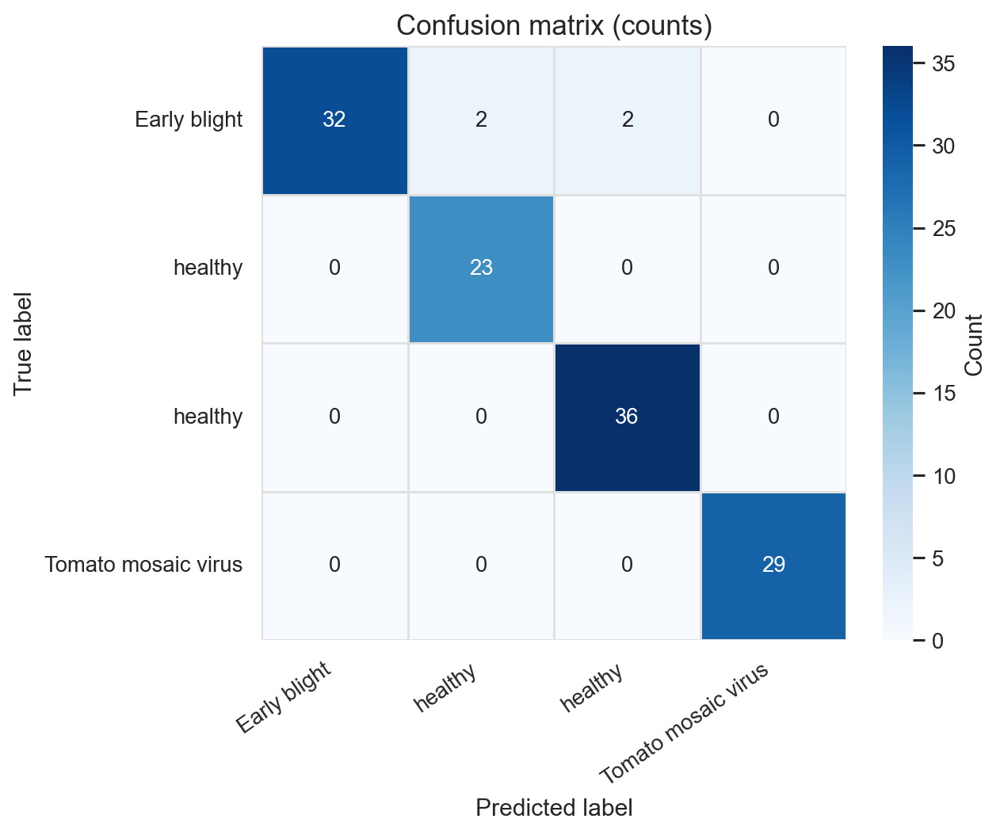
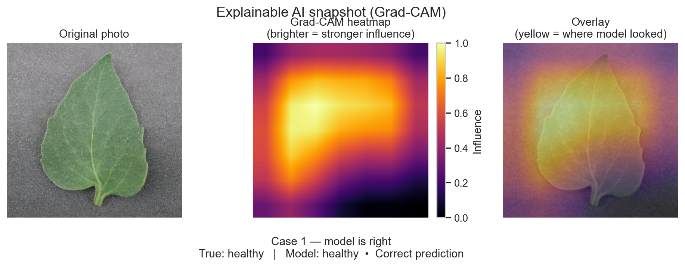
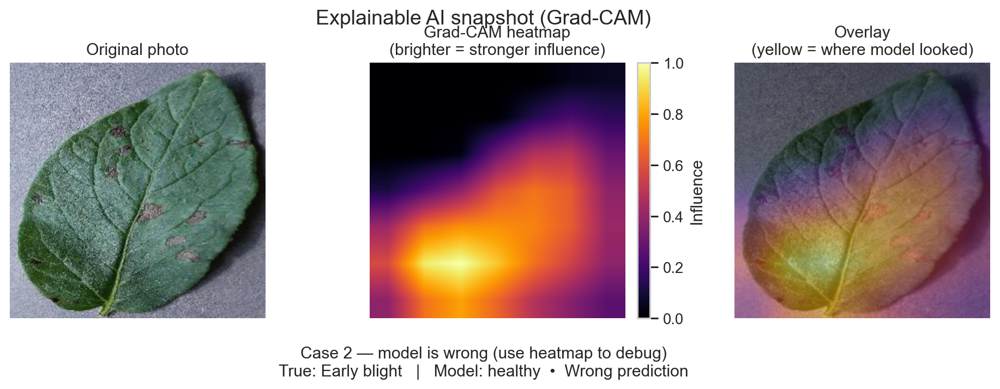
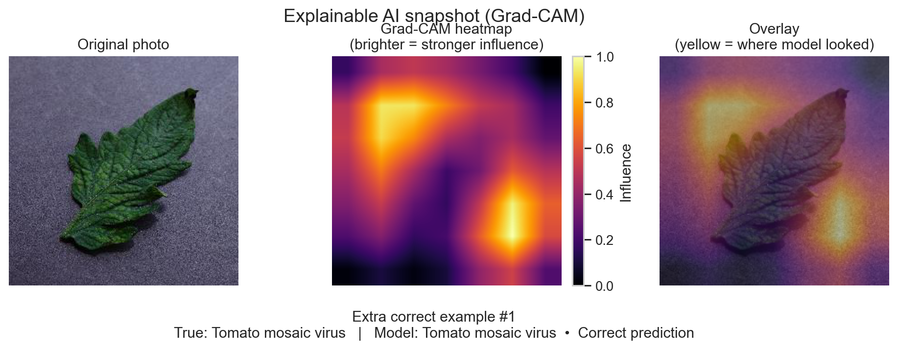
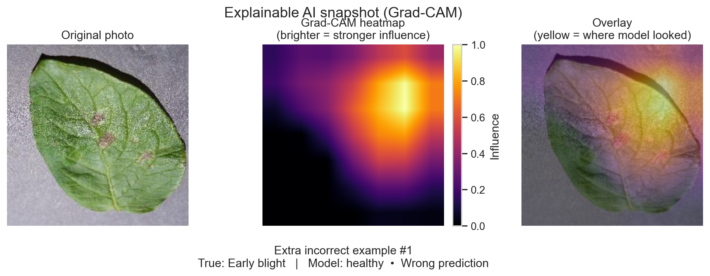
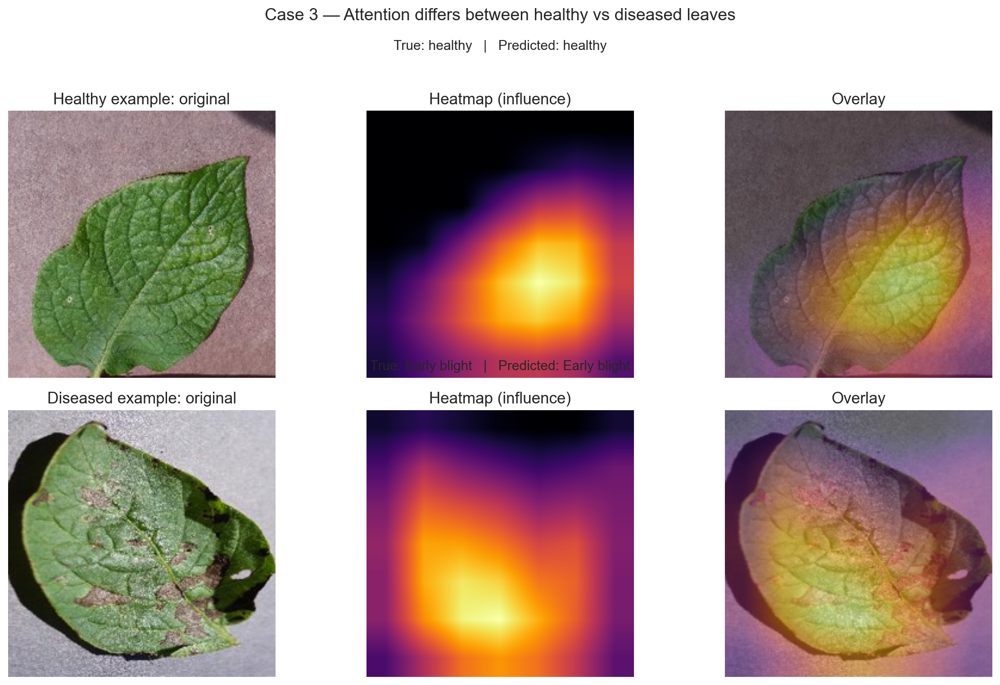

Explainable AI with CNNs — Grad-CAM on PlantVillage
A brief tutorial, in the form of a story, on how we are training a CNN classifier and then apply Grad-CAM to understand which features of a leaf picture contributed, on average, the most to the prediction (Selvaraju et al., 2017).
The idea in plain language
Suppose an AI is called upon to detect the plant disease in a photograph. The model might be true, but it might be difficult to believe. Grad-CAM (Selvaraju et al., 2017) visualizes the decision in the form of a heatmap to visualize what parts of the image the decision relied on the most.
Notable: Grad-CAM is a post-hoc visual explanation. It emphasizes correlated evidence that the model makes use of but does not demonstrate that the highlighted pixels are actually the real biological cause of disease (Ribeiro et al., 2016).
1) Scene A — The photos (PlantVillage dataset)
It is based on the data of PlantVillage (Hughes & Salathe, 2015). Here we use a tiny number of classes of health and disease in our project to make the tutorial short and narrow.

Tutorial selection Gallery of example plant leaf images of each class.
Figure: Some images of each of the chosen classes. These are the characters of our story. It is evident that the visual changes of healthy and diseased leaves can be observed, yet some types of diseases share color changes and texture variation. The significance of this early overlap is that it indicates that even a powerful CNN must not classify efforts with a trivial task. It also justifies explainability in the future, therefore allowing us to ensure that the model is concentrating on leaf symptoms as opposed to accidental image patterns.
2) Scene B — Training the learner
We divide images into training, validation, and test sets in order to be able to estimate the level of model learning and its effectiveness on unseen images. This should be used together with (Validation is a better indicator than training accuracy alone)

Bar chart of the number of train, validation and test images of each of the selected classes.
Figure: The data division between Train and Validation and Test. The division makes evaluation honest and makes sure that the model is tested on images that it has never seen in the course of training. Balanced distribution in the classes facilitates less bias on the majority classes and accuracy comparison is more significant. This arrangement aids in the equitable interpretation of performance metrics as well as Grad-CAM clarifications in subsequent phases.

Three images of the same photo with the same photo resized and two variations of different training augmentations.
Figure: The model is lost on variations of one and the same photo in order that it learns powerful patterns. Augmentation enhances diversity in terms of orientation, scale, and appearance and this is useful in making the model generalized with respect to a single visual style. This eliminates the possibility of the network just memorizing the exact training samples rather than learning the disease structures. This results in the model behavior being more stable when tested with new photos with small photographic differences.
3) Scene C — The report card (learning curves)
There are two signals that we track, (1) loss (smaller is better), (2) accuracy (greater is better) on training vs validation.

Loss and accuracy during train and validation across epochs: learning curves.
Figure: Training progress. We are anticipating a reduction in the loss and improvement in accuracy. The model demonstrates that its accuracy is increasing and its loss is reducing as the number of epochs increases, suggesting that the model is learning some meaningful patterns of classes discrimination. The pattern of validation is generally the same as the pattern of training indicating minimal overfitting as opposed to extreme memorization. Another gap of training and validation curves will represent where the regularization may be further enhanced or where more data may be used to make it more robust.
4) Scene D — Evaluation (where predictions go wrong)
Confusion matrix indicates the classes that are confused by the model. The correct predictions are diagonally placed.

Confusion matrix of true and predicted classes of the chosen classes.
Figure: Confusion matrix. In search of off-diagonal blocks, find out which diseases are confused. Powerful diagonal cells imply that the model rightly classifies most of the samples in every category. The off-diagnostic errors indicate that the visually similar disease categories are confused in some cases, which is anticipated in the case of overlapping symptoms. Such pattern of errors has shown where the class specific enrichment of data or targeted augmentation would offer maximum benefits.
5) Scene E — The explanation (Grad-CAM heatmaps)
Every snapshot consists of: (1) the original photograph, (2) a heatmap (brightness corresponds to the strength of the influence), (3) an overlay, which makes the non-technical viewer know where the model looked.

Grad-CAM interpretation of a correct prediction: original image, heatmap and overlay.
Case 1: Correct prediction. Plausible diseased tissue should be in accordance with heatmap. Gray patches of the leaf are of interest in this model, which is in line with the apparent symptoms of the disease. This implies that the network is not relying on the background noise to make the appropriate decision but instead relies on the evidence of the leaves that is relevant. Consistency of prediction and point of focus of pathology gives a greater confidence of the classifier learning meaningful visual cues.

Explaination of a wrong prediction using Grad-CAM: original image, heatmap, and overlay.
Case 2: Wrong prediction. Misleading focus can be revealed by heatmap (helpful in debugging). It is possible to say that the attention map is partially shifted to less informative parts, and this is the reason why the wrong class was assigned. This means that the model is possibly responding to uncertain texture/color pattern common to sets of diseases. These instances are useful in debugging since they establish the places where more samples or better preprocessing should be done.

Other correct prediction Grad-CAM panel: original, heatmap, overlay.
Extra Grad-CAM (correct): This is another correct case so that the use of one anecdote is not relied on. The presence of regular attention to the areas of leaf symptoms in a series of correctly solved examples supports the argument that the model acquired meaningful features. When the focus is on similar patterns of disease repeatedly, the belief in the general reasoning as opposed to the coincidental correspondence of the model is enhanced.

Further Grad-CAM panel of another false prediction: original, heatmap, overlay.
Extra Grad-CAM (incorrect): This is another failure example of the model not comprehending when it fails. When ambiguous textures or non-symptom locations are highlighted in the heatmap, that indicates that the classifier is susceptible to spurious or coinciding visual features. Such descriptions facilitate the establishment of realistic boundaries of deployment and incentive the enhancement of datasets.

Comparisons of Grad-CAM overlay localization of attention between healthy and diseased examples and the visualization of varying attention patterns.
Why this matters
Explainable AI techniques like Grad-CAM are important because they help users trust model predictions. In real-world applications such as agriculture, understanding why a model makes a decision is as important as the accuracy itself.
Farmers and agronomists need transparent evidence before acting on disease alerts that may affect crop treatment costs and yield outcomes. Visual explanations provide a practical bridge between deep learning outputs and human decision-making.
Ethics note (what Grad-CAM can and cannot promise)
Grad-CAM provides post-hoc explanations, but these are not causal and may highlight correlated features rather than true disease regions (Ribeiro et al., 2016).
Additionally, models trained on PlantVillage may not generalise well to real-world conditions due to controlled backgrounds,
lighting, and image quality. This can lead to biased predictions if deployed in practical agricultural settings.
Therefore, such systems should be used as decision-support tools rather than fully automated solutions, and predictions should be validated by domain experts before taking action.
Limitations
This project uses a subset of PlantVillage data collected in relatively controlled conditions, so performance may drop in field environments with cluttered backgrounds, variable lighting, or low-quality mobile images.
Grad-CAM improves transparency, but it does not provide causal proof and can sometimes produce visually plausible maps even when the prediction is wrong. For this reason, interpretability outputs should be treated as supporting evidence, not definitive diagnosis.
The current model is also constrained by class coverage and sample diversity. Expanding the dataset to include more crops, disease stages, and geographic variability would improve reliability and external validity.
Conclusion
This webpage demonstrates a complete explainable image-classification pipeline: dataset preparation, model training, quantitative evaluation, and Grad-CAM-based interpretation. The combined results show that the CNN can learn useful disease patterns while also exposing where and why errors occur.
By adding interpretation to each figure, the analysis moves beyond simple description and provides evidence-based reasoning about model behavior. This is essential for academic rigor and for practical deployment where users must understand both strengths and failure cases.
Overall, the work supports the use of explainable AI as a decision-support approach in agriculture, where trust, transparency, and responsible use are as critical as raw predictive performance.
References
Selvaraju, R.R., Cogswell, M., Das, A., Vedantam, R., Parikh, D. and Batra, D., 2017. Grad-CAM: Visual Explanations from Deep Networks via Gradient-based Localization. International Journal of Computer Vision (IJCV).
Available at: https://arxiv.org/abs/1610.02391
Hughes, D.P. and Salathé, M., 2015. An open access repository of images on plant health to enable the development of mobile disease diagnostics. arXiv preprint.
Available at:
https://arxiv.org/abs/1511.08060
He, K., Zhang, X., Ren, S. and Sun, J., 2016. Deep Residual Learning for Image Recognition. Proceedings of the IEEE Conference on Computer Vision and Pattern Recognition (CVPR).
Available at: https://arxiv.org/abs/1512.03385
Krizhevsky, A., Sutskever, I. and Hinton, G.E., 2012. ImageNet classification with deep convolutional neural networks. Advances in Neural Information Processing Systems (NeurIPS).
Available at: https://arxiv.org/abs/1202.3235
Zeiler, M.D. and Fergus, R., 2014. Visualizing and understanding convolutional networks. European Conference on Computer Vision (ECCV).
Available at: https://arxiv.org/abs/1311.2901
Paszke, A. et al., 2019. PyTorch: An Imperative Style, High-Performance Deep Learning Library. NeurIPS.
Available at: https://pytorch.org
Ribeiro, M.T., Singh, S. and Guestrin, C., 2016. Why Should I Trust You?: Explaining the Predictions of Any Classifier. ACM SIGKDD.
Available at: https://arxiv.org/abs/1602.04938